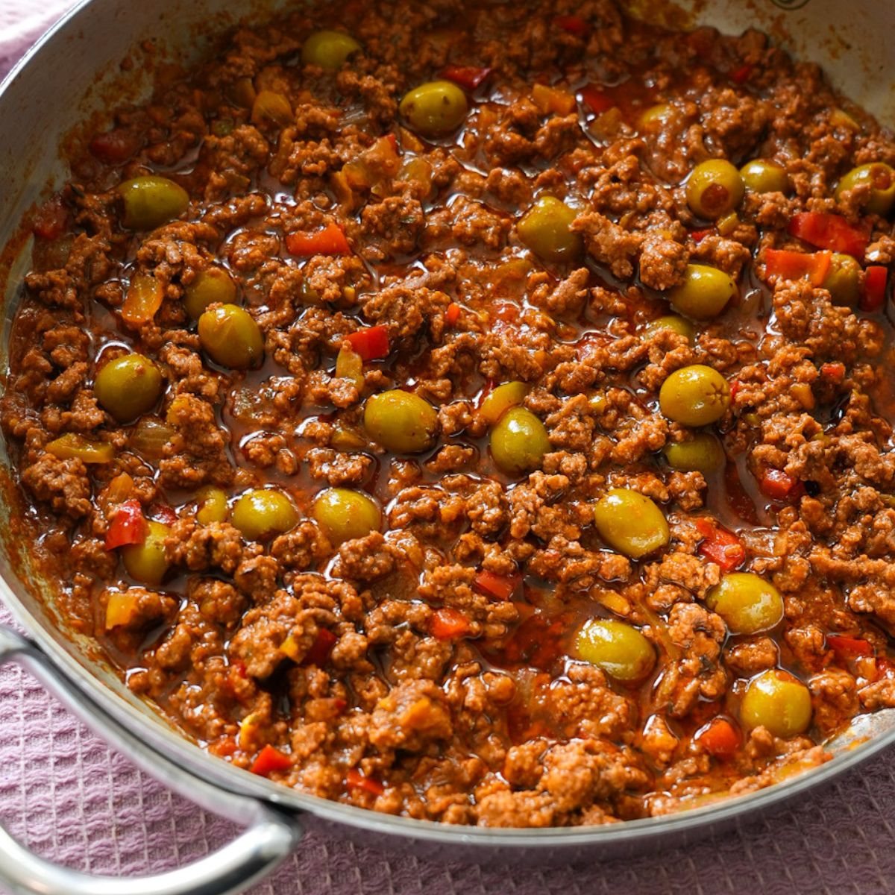

Picadillo

Cuban picadillo is a seasoned ground beef hash that pairs well with white rice. This simple dish is a staple in Cuban homes and for good reason!
Ingredients
- ground beef, 16 oz
- minced onion, 1
- minced green bell pepper, 1
- chopped tomatoes, 8 oz can
- chopped garlic, 1 tbsp
- pitted green olives, 8 to 12
- olive oil, 2 tbsp
- cumin, 1/2 tsp
- sazon completa, 2 tbsps
- salt and pepper
Steps
- Heat a couple of tablespoons of olive oil in a saute pan. Once oil is hot, cook green pepper and onion until onion is translucent. Then add garlic and saute with onions and peppers for a couple of minutes.
- Add ground beef to pan and incorporate cooked vegetables into the meat as it browns. Add cumin and season with sazon completa.
- Once meat is mostly cooked through, add olives and chopped tomatoes then let simmer for five to ten minutes.
- Salt and pepper to taste, and serve hot over white rice.